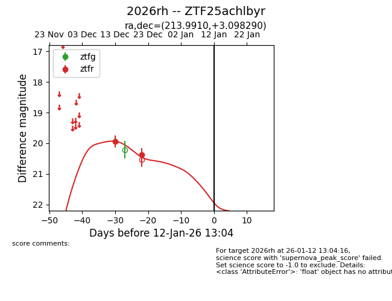
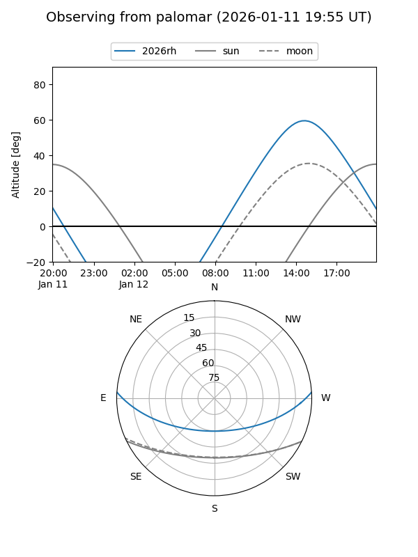
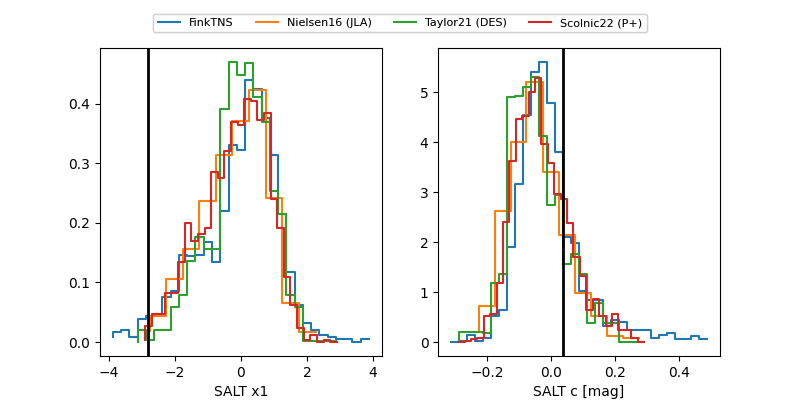

2026rh
Target 2026rh at 2026-01-12 13:05
Aliases and brokers:
FINK: link
Lasair: link
ALeRCE: link
TNS: link
YSE: link
alt names
ZTF25achlbyr (ztf,fink_ztf)
2026rh (tns,yse)
Coordinates:
equatorial (ra, dec) = 213.9910,+3.09829
equatorial (HMS+DMS) = 14:15:57.84,+03:05:53.85
galactic (l, b) = (346.6398,+58.60246)
Flags:
Photometry:
last ztfr=20.37
2 ztfr detections
Lightcurve

Visibility


Additional plots
